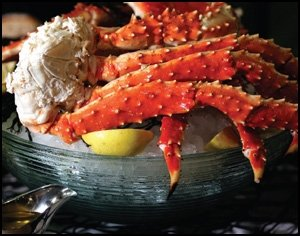
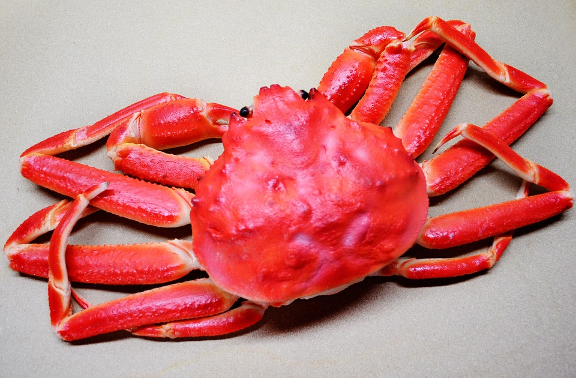
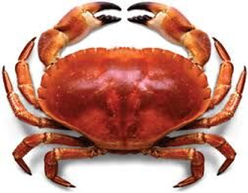
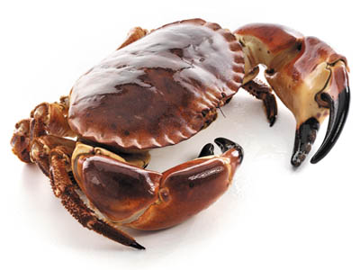

JD Trading began with the passion of Donnie Guinn, President/CEO, working out of Tampa, Florida.
From Europe, Asia and South America, JD Trading specializes in frozen crab products. Our high standards and focus bring in the best premium and unique top-of-the-line products.We are Importers and Wholesalers, specializing in the sourcing of frozen Premier Crab Products. JD Trading offers products for food distributors, food service and retail markets. We import the following products:
At JD Trading, we travel the world finding HAACP certified producers and exporters who meet the highest standards and contract with sources to provide a product that will meet our customer's standards. By sourcing our products globally we are very competitive on price and quality.
Thank you for your interest in partnering with JD Trading; we’re excited to welcome you to the family. As a leading distributor of frozen products, our focus is simple: providing you with the highest quality product and level of service. Our expert procurement, distribution, sales and marketing services allow us to deliver trusted protein products that delight your customers and exceed your expectations every step of the way. We work hard so that you can focus on what matters most to you: building your bottom line.
   